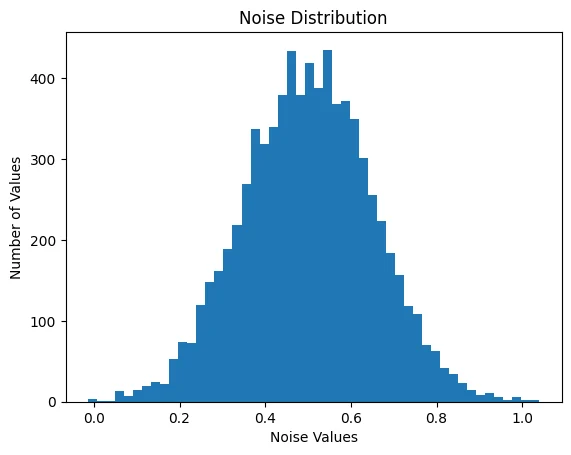
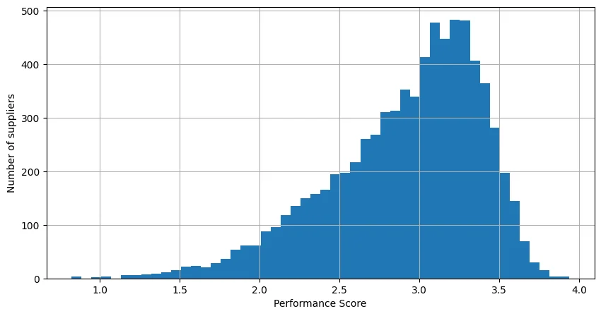
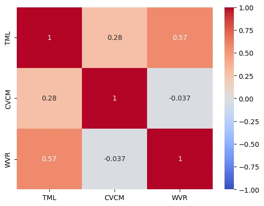
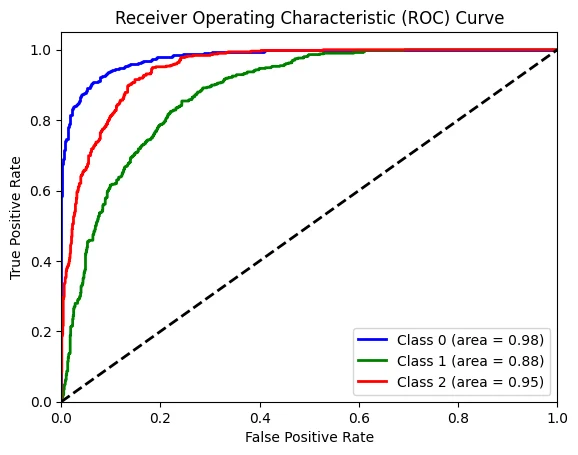

Outgassing Materials ML Modelling
Contents
-
Define Goals
-
Feature Engineering
-
Performance Score Calculation
-
Initial Model Selection and Implementation
- Regression
- Linear Regression
- Random Forest Regressor
-
Regression Evaluation
- MSE / R Squared
- Ridge / Lasso
-
Classification
- Logistic Regression
- SVM
- Classification Evaluation
- Accuracy
- Confusion Matrix
- Classification Report
- Regression
-
Best Model Selection
-
Conclusion
1. Define Goals
Objective:
1. Develop a linear regression model to evaluate and predict material performance based on material quality metrics (TML, CVCM, WVR).
- Use
classification machine learningto assess material reliability by predicting values for procurement and quality control.
Understanding Features:
CVCM: This parameter measures the percentage of volatile material that can condense on a cold surface during the outgassing test. Materials with lower CVCM values are preferable for high-vacuum environments, as they release fewer contaminants .
WVR: This measures the amount of water vapor a material absorbs back after being subjected to Total Mass Loss (TML) and Collected Volatile Condensable Materials (CVCM) tests. Materials with high WVR values tend to absorb more moisture, which can lead to issues like corrosion, degradation, or reduced structural integrity. Materials with lower WVR values are preferable
TML: This measures the percentage of a material's mass lost during a test where the material is exposed to a high vacuum and temperature (125°C) for 24 hours. A lower TML indicates better performance in vacuum environments.
Importing libraries
Code cell 5
import numpy as np
import pandas as pd
%matplotlib inline
import matplotlib.pyplot as plt
from sklearn import datasets
import seaborn as sns
from sklearn import svm
from sklearn.datasets import make_blobs
from scipy.stats import pearsonr
from sklearn.preprocessing import StandardScaler
from sklearn.linear_model import LinearRegression
from sklearn.linear_model import LogisticRegression
from sklearn.linear_model import Ridge, Lasso
from sklearn.model_selection import GridSearchCV
from sklearn.ensemble import RandomForestRegressor
from sklearn.preprocessing import MinMaxScaler
from sklearn.preprocessing import label_binarize
from sklearn.model_selection import cross_val_score
from sklearn.preprocessing import LabelEncoder
from sklearn.ensemble import RandomForestClassifier
from sklearn.metrics import roc_curve, roc_auc_score, auc
from sklearn.model_selection import train_test_split
from sklearn.metrics import mean_squared_error, r2_score
from sklearn.metrics import accuracy_score, precision_score, recall_score, confusion_matrix, classification_reportreading CSV file
Code cell 7
data = pd.read_csv(r'C:\Users\GGPC\IoD_Mini_Projects\Mini_Project_2\project_NASA_Materials_Project\data\result\cleaned_Outgassing_Db_20240702.csv')
material_df = pd.DataFrame(data)Code cell 8
material_df.info()Code cell 9
material_df.head()| ID | Sample Material | MFR | TML | Category | CVCM | Space Code | WVR | Material Usage | |
|---|---|---|---|---|---|---|---|---|---|
| 0 | GSC33214 | "V" MATERIAL IN CLICKBOND CB4023V, GLASS/PEI -... | CLB | 0.37 | 12 | 0.00 | 1.0 | 0.35 | CLICKBOND |
| 1 | GSC33217 | "VC" MATERIAL IN CLICKBOND CB9257VC, CARBON FI... | CLB | 0.52 | 12 | 0.00 | 1.0 | 0.28 | CLICKBOND |
| 2 | GSC34174 | 0667 BLACK EPDM | PRS | 0.65 | 15 | 0.13 | 1.0 | 0.07 | ORING |
| 3 | GSC33829 | 1 INCH COPPER TAPE | MMM | 0.24 | 16 | 0.08 | 1.0 | 0.01 | TAPE |
| 4 | GSC33397 | 100 DUN-LAM, GE COATED BLACK KAPTON XC | DUN | 0.89 | 6 | 0.01 | 1.0 | 0.67 | COND BLANKET FILM |
2. Feature Engineering
Supplier performance evaluation - To calculate supplier performance, we will use the following metrics: - TML: Total Material Loss - CVCM: Cumulative Variance in Cost of Materials - WVR: Weighted Variance Ratio
Code cell 13
#performance score
# #adding noise to make the dataset a bit more realistic scenario
noise = np.random.normal(0.5, 0.15, size=material_df.shape[0])
# Normalize the features to a common scale
scaler = MinMaxScaler()
material_df[['TML', 'CVCM', 'WVR']] = scaler.fit_transform(material_df[['TML', 'CVCM', 'WVR']])
plt.hist(noise, bins=50)
plt.title("Noise Distribution")
plt.xlabel('Noise Values')
plt.ylabel('Number of Values')
plt.show()
# Calculate the performance score
material_df['performance_score'] = (1 - material_df['TML']) + (1 - material_df['CVCM']) + (1 - material_df['WVR']) + noise
#having a look at the distribution of the performance score
material_df['performance_score'].hist(bins=50, figsize=(10, 5))
plt.xlabel('Performance Score')
plt.ylabel('Number of suppliers')
plt.show()


Code cell 14
#correlation matrix
corr = material_df[['TML', 'CVCM', 'WVR']].corr()
sns.heatmap(corr, vmin=-1, vmax=1, center=0, cmap='coolwarm', annot=True)
plt.show()
3. Initial Model Selection and Implementation
Model Selection
-
Regression Models: To predict the supplier performance score
- Linear Regression
- Random Forest Regressor
-
Classification Models: To classify suppliers into performance categories (high, medium, low)
- Logistic Regression
- Random Forest Classifier
- Support Vector Machine (SVM)
Linear Regression Model
Code cell 18
#feature and target
X = material_df[['TML', 'CVCM', 'WVR']]
y = material_df['performance_score']Code cell 19
#splitting data
X_train, X_test, y_train, y_test = train_test_split(X, y, test_size=0.2, random_state=1)Code cell 20
#scaling to maintain consistency with scaling
scaler = MinMaxScaler()
X_train_scaled = scaler.fit_transform(X_train)
X_test_scaled = scaler.transform(X_test)Code cell 21
# setting up model
lr_model = LinearRegression()
#fitting the training data to the model
lr_model.fit(X_train_scaled, y_train)LinearRegression()In a Jupyter environment, please rerun this cell to show the HTML representation or trust the notebook.
On GitHub, the HTML representation is unable to render, please try loading this page with nbviewer.org. LinearRegression?Documentation for LinearRegressioniFitted
LinearRegression()
Predictions
Code cell 23
# making predictions on test data
y_pred = lr_model.predict(X_test_scaled)
print(f'Mean Squared Error: {mean_squared_error(y_test, y_pred)}')
print(f'R_squared: {r2_score(y_test, y_pred)}')Evaluation for linear regression
Ridge and Lasso Regularization
Code cell 26
#model initialization
ridge_model = Ridge(alpha=0.05)
lasso_model = Lasso(alpha=0.05)
#splitting for ridge and lasso models
X_rnl = material_df[['TML', 'CVCM', 'WVR']]
y_rnl = material_df['performance_score']
X_train_rnl, X_test_rnl, y_train_rnl, y_test_rnl = train_test_split(X_rnl, y_rnl, test_size=0.2, random_state=1)
#to maintain consistency with scaling
scaler = MinMaxScaler()
X_train_rnl_scaled = scaler.fit_transform(X_train_rnl)
X_test_rnl_scaled = scaler.transform(X_test_rnl)
#model fitting
ridge_model.fit(X_train_rnl_scaled, y_train_rnl)
lasso_model.fit(X_train_rnl_scaled, y_train_rnl)
#predictions
ridge_predictions = ridge_model.predict(X_test_rnl_scaled)
lasso_predictions = lasso_model.predict(X_test_rnl_scaled)
#evaluating the mse
ridge_mse = mean_squared_error(y_test_rnl, ridge_predictions)
lasso_mse = mean_squared_error(y_test_rnl, lasso_predictions)
#evaluating r_squared
ridge_r2 = r2_score(y_test_rnl, ridge_predictions)
lasso_r2 = r2_score(y_test_rnl, lasso_predictions)
#printing the results
print(f'Ridge MSE: {ridge_mse}')
print(f'Ridge R_squared: {ridge_r2}\n')
print(f'Lasso MSE: {lasso_mse}')
print(f'Lasso R_squared: {lasso_r2}')
Adjusting Regularization Parameters
Code cell 28
#looking for best parameters for ridge and lasso
ridge_params = {'alpha': [0.05, 0.1, 1, 10, 100]}
ridge_model_gs = GridSearchCV(Ridge(), ridge_params, cv=10)
ridge_model_gs.fit(X_train_rnl, y_train_rnl)
#printing the results
print(f"Best Ridge alpha: {ridge_model_gs.best_params_['alpha']}")
#testing the model with the best parameters
ridge_predictions = ridge_model_gs.predict(X_test_rnl)
ridge_mse = mean_squared_error(y_test_rnl, ridge_predictions)
print(f'Ridge MSE: {ridge_mse}')Code cell 29
lasso_params = {'alpha': [0.05, 0.1, 1, 10, 100]}
lasso_model = GridSearchCV(Lasso(), lasso_params, cv=10)
lasso_model.fit(X_train, y_train)
print(f"Best Lasso alpha: {lasso_model.best_params_['alpha']}")
lasso_predictions = lasso_model.predict(X_test)
lasso_mse = mean_squared_error(y_test, lasso_predictions)
lasso_r2 = r2_score(y_test, lasso_predictions)
print(f'Lasso MSE: {lasso_mse}')
print(f'Lasso R_squared: {lasso_r2}')Random Forest Regressor Model
Code cell 31
rf_model = RandomForestRegressor(n_estimators=10, random_state=1)
rf_model.fit(X_train, y_train)RandomForestRegressor(n_estimators=10, random_state=1)In a Jupyter environment, please rerun this cell to show the HTML representation or trust the notebook.
On GitHub, the HTML representation is unable to render, please try loading this page with nbviewer.org. RandomForestRegressor?Documentation for RandomForestRegressoriFitted
RandomForestRegressor(n_estimators=10, random_state=1)
Code cell 32
y_pred = rf_model.predict(X_test)
print(f'Mean Squared Error: {mean_squared_error(y_test, y_pred)}')
print(f'R_squared: {r2_score(y_test, y_pred)}')Thoughts
NOTE: lack of features and domain parameters / knowledge.
Classification Model
Logistic Regression Model
Code cell 36
# Performance Categories
#Dividing the performance score into 3 categories: Low, Medium, High
material_df['performance_category'] = pd.qcut(material_df['performance_score'], q=3, labels=['Low', 'Medium', 'High'])
material_df['performance_category']
Text output
0 Medium
1 Medium
2 Medium
3 Medium
4 Low
...
7554 Low
7555 Medium
7556 Low
7557 Low
7558 Low
Name: performance_category, Length: 7559, dtype: category
Categories (3, object): ['Low' < 'Medium' < 'High']Code cell 37
# setting up feature and target
X = material_df[['TML', 'CVCM', 'WVR']]
y = material_df['performance_category']
#encoding the target variable
y = y.cat.codes
#spliting data
X_train, X_test, y_train, y_test = train_test_split(X, y, test_size=0.2, random_state=1)
Code cell 38
#scaling to maintain consistency with scaling
scaler = MinMaxScaler()
X_train_Lr_scaled = scaler.fit_transform(X_train)
X_test_Lr_scaled = scaler.transform(X_test)Code cell 39
# Logistic Regression model
logreg_model = LogisticRegression()
logreg_model.fit(X_train_Lr_scaled, y_train)LogisticRegression()In a Jupyter environment, please rerun this cell to show the HTML representation or trust the notebook.
On GitHub, the HTML representation is unable to render, please try loading this page with nbviewer.org. LogisticRegression?Documentation for LogisticRegressioniFitted
LogisticRegression()
Predictions
Code cell 41
#predictions
y_pred = logreg_model.predict(X_test_Lr_scaled)Evaluation
Code cell 43
# Evaluate the model
accuracy = accuracy_score(y_test, y_pred)
conf_matrix = confusion_matrix(y_test, y_pred)
class_report = classification_report(y_test, y_pred)
print(f"Accuracy: {accuracy}\n")
print(f"Confusion Matrix:\n{conf_matrix}\n")
print(f"Classification Report:\n{class_report}")Here's the updated markdown based on the results from the image:
Model Evaluation
| Metric | Value |
|---|---|
| Overall Accuracy | 80.16% |
Confusion Matrix
Class 0:
| Predicted: Class 0 | Predicted: Class 1 | Predicted: Class 2 | |
|---|---|---|---|
| Actual: Class 0 | TP: 444 | FN: 65 | FN: 0 |
| Actual: Class 1 | FP: 39 | ||
| Actual: Class 2 | FP: 1 |
Class 1:
| Predicted: Class 0 | Predicted: Class 1 | Predicted: Class 2 | |
|---|---|---|---|
| Actual: Class 0 | FP: 39 | ||
| Actual: Class 1 | FN: 65 | TP: 358 | FN: 111 |
| Actual: Class 2 | FP: 84 |
Class 2:
| Predicted: Class 0 | Predicted: Class 1 | Predicted: Class 2 | |
|---|---|---|---|
| Actual: Class 0 | FP: 1 | ||
| Actual: Class 1 | FN: 111 | FP: 84 | |
| Actual: Class 2 | FN: 0 | FN: 84 | TP: 410 |
Explanation
-
Accuracy: This means the model correctly predicted the class for
80.16%of the samples. -
Classification Report:
- Precision: The percentage of
correct positive predictionsfor each class. - Recall: The percentage of
actual positives correctly identified. - F1 Score: The
balance between precision and recall. - Support: The
number of actual samples for each class.
Classification Report Breakdown
Class-wise Breakdown
Class 0:
- Precision: 0.92 (92%)
- Out of all the predictions made for class 0, 92% were correct.
- Recall: 0.87 (87%)
- Out of all the actual instances of class 0, 87% were correctly identified.
- F1 Score: 0.89 (89%)
- This is a combined measure of precision and recall.
- Support: 509
- There are 509 actual instances of class 0 in the dataset.
Class 1:
- Precision: 0.71 (71%)
- Out of all the predictions made for class 1, 71% were correct.
- Recall: 0.70 (70%)
- Out of all the actual instances of class 1, 70% were correctly identified.
- F1 Score: 0.71 (71%)
- This is a combined measure of precision and recall.
- Support: 508
- There are 508 actual instances of class 1 in the dataset.
Class 2:
- Precision: 0.79 (79%)
- Out of all the predictions made for class 2, 79% were correct.
- Recall: 0.83 (83%)
- Out of all the actual instances of class 2, 83% were correctly identified.
- F1 Score: 0.81 (81%)
- This is a combined measure of precision and recall.
- Support: 495
- There are 495 actual instances of class 2 in the dataset.
Summary
- Class 0 has the highest precision (92%) and F1 score (89%), indicating strong performance in predicting this class.
- Class 1 has the lowest precision (71%) and F1 score (71%), indicating that predictions for this class are less accurate.
- Class 2 shows balanced performance with good precision (79%) and recall (83%), making it a reliable predictor for this class.
Code cell 45
# Binarize the output
y_test_bin = label_binarize(y_test, classes=[0, 1, 2])
y_pred_prob = logreg_model.predict_proba(X_test_Lr_scaled)
# Compute ROC curve and ROC area for each class
fpr = dict()
tpr = dict()
roc_auc = dict()
# forloop to go through each class and get fpr and tpr
for i in range(3):
fpr[i], tpr[i], _ = roc_curve(y_test_bin[:, i], y_pred_prob[:, i])
roc_auc[i] = auc(fpr[i], tpr[i])
# forloop to Plot ROC curve for each class
plt.figure()
colors = ['blue', 'green', 'red']
for i, color in zip(range(3), colors):
plt.plot(fpr[i], tpr[i], color=color, lw=2, label=f'Class {i} (area = {roc_auc[i]:.2f})')
plt.plot([0, 1], [0, 1], 'k--', lw=2)
plt.xlim([0.0, 1.0])
plt.ylim([0.0, 1.05])
plt.xlabel('False Positive Rate')
plt.ylabel('True Positive Rate')
plt.title('Receiver Operating Characteristic (ROC) Curve')
plt.legend(loc="lower right")
plt.show()

Class 0 = Low Performance
Class 1 = Medium Performance
Class 2 = High Performance
4. Model Selection
Selected models by overall evaluation scores
-
Regression Model: Linear Regression.
-
Classification Model: Logistic Regression
5. Conclusion
-
Further Research Recommendations:
- Expand Dataset: Include more materials and suppliers to improve the models performance and accuracy.
- Experiment with more Classification Models and improvement in evaluations of the models.
- Incorporate Categorical Features: Analyze the impact of different material categories on performance.
-
Potential application of the Model:
-
Optimized Material Selection: Leverage predictive analytics to choose the best materials for specific space applications, reducing costs and improving reliability.
-
Proactive Quality Control: Implement continuous monitoring systems to detect material performance issues early, preventing potential mission failures.
-
R&D Innovations: Apply model findings to drive research and development efforts, focusing on improving existing materials or developing new ones with superior performance characteristics.
-